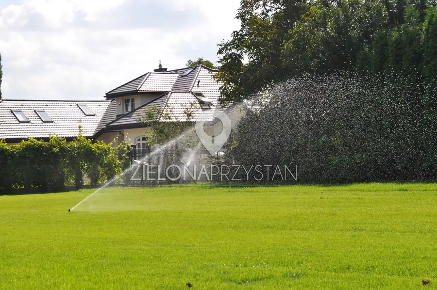
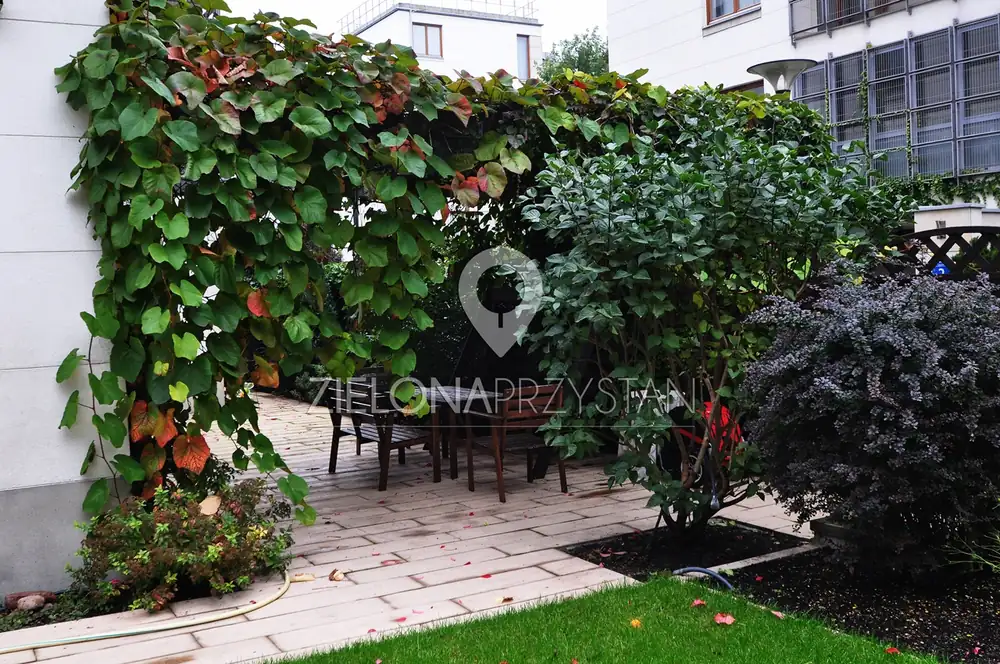

Strona główna / Pielęgnacja
Pielęgnacja ogrodów, nawadnianie i roboty koszące
Opiekujemy się ogrodami przydomowymi i terenami zieleni przy firmach oraz wspólnotach mieszkaniowych w Warszawie i okolicach: regularnie, sezonowo albo doraźnie.
Zadzwoń: 667 052 000

Pielęgnacja ogrodów
Oferujemy kompleksową pielęgnację ogrodów przydomowych i terenów zieleni przy firmach. Formę opieki dobieramy do ogrodu i potrzeb właściciela.
- Pielęgnacja stałaWizyty raz w tygodniu albo 1-2 razy w miesiącu.
- Pielęgnacja sezonowaPrace wiosenne i jesienne.
- Pielęgnacja doraźnaNa życzenie klienta, wtedy kiedy jest potrzebna.
Co wykonujemy
- profesjonalne cięcie drzew i krzewów
- pielęgnacja trawnika
- nawożenie roślin
- ochrona roślin metodami naturalnymi i chemicznymi
- pielenie
- okrywanie roślin na zimę
- konserwacja elementów małej architektury
- czyszczenie i przygotowanie do zimy oczek i zbiorników wodnych
- konserwacja systemu nawadniającego

Chirurgia drzew
Drzewa wymagają innej wiedzy niż rabaty i trawnik. Posiadamy specjalistyczne uprawnienia do prac przy drzewach.
- leczenie lub usuwanie mechanicznych uszkodzeń drzew
- leczenie drzew zainfekowanych przez choroby i szkodniki
- prześwietlanie koron
- usuwanie suszu i wiatrołomów
- redukcja masy drzew i obniżanie wysokości
- poprawianie statyki: podpory, wiązania opasowe
- napowietrzanie systemów korzeniowych
- zabezpieczanie drzew na czas prac budowlanych

Systemy automatycznego nawadniania
Projektujemy i zakładamy profesjonalne systemy automatycznego nawadniania w ogrodach przydomowych i na terenach zieleni przy firmach. Pracujemy głównie w oparciu o urządzenia firmy Rain Bird.
- Projekt i montażSystem dobrany do ogrodu, nasadzeń i trawnika, zakładany razem z ogrodem albo w istniejącym ogrodzie.
- Rozwiązywanie problemówNaszą specjalnością są problemy z eksploatacją istniejących systemów nawadniających.
- KonserwacjaCałoroczna oraz otwarcie i zamknięcie sezonu.
Zakładamy też systemy odwadniające i drenujące, gdy działka tego wymaga.

Roboty koszące
Zajmujemy się sprzedażą i montażem robotów koszących marki Robomow, Wiper i Ambrogio. Ofertę kierujemy do właścicieli ogrodów prywatnych i firm.
Robot najlepiej zaplanować razem z ogrodem i nawadnianiem, dlatego pytamy o niego już przy projekcie. Zakładamy też trawniki z rolki i z siewu oraz siatkę na krety.
Zapytaj o robota: 667 052 000
Tereny zieleni przy firmach i wspólnotach
Utrzymujemy tereny zieleni wokół siedzib firm i osiedli: pielęgnacja drzew, krzewów i trawników, konserwacja nawadniania, naprawy murków, obrzeży i skarp.
- Backaldrin PolskaKompleksowe utrzymanie terenów zieleni wokół firmy, pielęgnacja drzew, krzewów i trawników.
- WM Światowida 63AUtrzymanie i pielęgnacja zieleni osiedlowej, terenu placu zabaw, konserwacja nawadniania.
- Osiedle JerozolimskieMurki oporowe, obsadzenie skarp roślinami, obrzeża z kostki granitowej (dla Atrium 21).
Umów przegląd ogrodu
Zadzwoń w sprawie pielęgnacji, nawadniania lub robota koszącego: 667 052 000.